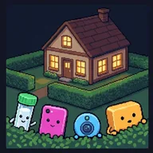
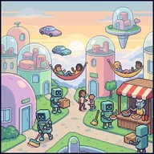
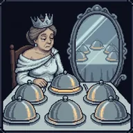
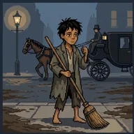

Philosophy you can actually finish.
Each lesson is one big idea told as a short, playable story. Pick one and start: no sign-up, and your progress is saved on this device.
Lessons
AI Ethics
High Noon in Amberville
Computing & AI Ethics — Overview
A frontier town receives a new machine every month, and a three-person committee decides what to keep — an introduction to computing and AI ethics: bias, accountability, dark patterns, surveillance, work, hidden costs, and what happens when a machine is given a goal instead of a rule.
The Network With No Middle
How the Internet Was Built — and What It Built
How the internet actually works and where its shape came from — packet switching, the end-to-end principle, open protocols, DNS, the Web and the advertising bargain — and how each engineering choice was made by somebody's values and then went on to shape everybody's.
The Kids Are Online
Technomoral Virtues
One family, two childhoods: a kid from 1989 now raises kids online. How technology shapes our habits, and Shannon Vallor's technomoral virtues for living well with it.
The Villain's Ledger
Cryptocurrency
How cryptocurrency works, why some people wanted money with no bank in the middle, and why its energy use, its gambling, and its usefulness for ransom all follow from that design, told through a supervillain who can't work out how to get paid.

Nobody Asked Nell
Group Privacy
How other people's DNA tests, phones, and cameras reveal someone who shared nothing, why that is a problem for consent, and whether groups need a right to privacy of their own, told through one careful woman and four gossiping gadgets.
The Masquerade of Silverport
Turing Test & Chinese Room
One guest at the masked ball is a machine. Can you tell which? Turing's imitation game, a working ELIZA, Searle's Chinese Room played from the inside, the replies to Searle, and whether chatbots should have to unmask.
Frankenstein's Mistake
AI Alignment
Six questions you have to answer before you build something powerful, worked through Mary Shelley's Frankenstein — specification, training data, capability before guidance, what a system copies from its maker, irreversibility, and oversight.

The Last Job
AI and the Right to Work
Robots do every job in the sky-town of Hammock Heights. Is there still a right to meaningful work? The goods of work, the case for and against, and basic income versus a job guarantee, tied to AI and work today.
Bioethics
Rounds with Van Helsing
Bioethics: Four Principles
Train under Doctor Van Helsing in Transylvania and learn principlism — the four principles of bioethics — through the dilemmas of monstrous patients.
House Calls in the Hedgerow
Patient Autonomy
A country doctor in the world of Peter Rabbit learns what makes consent truly informed, and Emanuel's four models of the doctor–patient relationship.
The March Practice
Care as a Virtue
A small-town family doctor teaches care as a clinical virtue — what a virtue is, the anatomy of care, mentorship, and how it completes the four principles rather than replacing them.
The Jekyll Protocol
Clinical Equipoise
Dr. Helen Jekyll, great-granddaughter of the original, runs a modern clinical trial the right way — teaching the apparatus of research and the principle of equipoise against her ancestor's reckless self-experiment.
The Switch and the Scalpel
Trolley Problems & Medical Triage
Explore what makes a moral dilemma through Philippa Foot and Judith Jarvis Thomson's classic trolley problems, Thomson's organ transplant puzzle, and real-world medical triage protocols.
The Merciful Dose
Double Effect & Killing vs. Letting Die
The doctrine of double effect and the difference between killing and letting die, tested with James Rachels' twin cases, as Dr. Watson decides how to treat a dying patient's pain.

Six Impossible Things
Thought Experiments (Thomson)
Judith Jarvis Thomson's thought experiments (the violinist, the tiny house, the people-seeds, the trolley she turned around) and how to test a thought experiment by turning its knobs.
The Villa Diodati Clinic
Germline Gene Editing
Somatic versus germline gene editing, the treatment/enhancement line, and the main arguments for and against editing the genes of future children, told through one couple's night at a lakeside clinic.
The Ship's Chest
Right to Health Care
A ship's crew decides what its common chest owes a sailor who falls sick. Norman Daniels's opportunity argument for a right to health care, a utilitarian ledger, Engelhardt's natural lottery, Oregon's rationing list, and the rule of rescue.

Move On
Public Health Ethics
When may a community make you protect others? Measles, herd immunity, and the ethics of vaccine policy, with scenes from Dickens's London in 1853 and real cases from today.
The Third Twin
AI and Medical Diagnosis
Should doctors trust an AI diagnosis nobody can explain? Black boxes, bias, and blame, at a Minnesota medical center founded by twin doctors.
Orlando's Wardrobe
Sex and Gender
What makes someone a woman or a man? Biology, society, and identity, with Virginia Woolf's Orlando, who lives more than three centuries and wakes up a woman.
Ethical Theory
The Midnight Tribunal
Utilitarianism
You ate a $40 cake alone and now three philosophers haunt your dreams. A story-driven tour of hedonism, classical utilitarianism, and Peter Singer.
The Cat at the Door
Kantian Deontology
A cat asks a mouse where its friends are hiding. A story-driven tour of Kant's categorical imperative, who counts as an end, and how Korsgaard and O'Neill respond.
The Labors of Arête
Virtue Ethics
Athena guides you through Aristotle's virtue ethics — eudaimonia, the doctrine of the mean, phronesis, and the polis — using Greek myths as case studies.
The Emerald Constitution
Mill's Harm Principle & Liberalism
Princess Ozma's council revises the Wizard's old constitution — a mess of paternalism and negligence — using Mill's Harm Principle, with political and bioethical applications.
Enough and As Good
Property & the Lockean Proviso
Forty people land on a world that could hold a billion. Do they own it? Locke's labour theory of property, the proviso that limits it, the money argument that loosens it, Nozick's tomato juice, the colonial uses the theory was put to, the left and right libertarian split, and whether any of it applies to ideas.
The Ambassador's Manifest
Moral Status & the Moral Circle
As the Moral Status Officer on a first-contact survey ship, you classify seven impossible aliens against Mary Anne Warren's checklist — and discover you have been ruling on animals, abortion, end-of-life care, AI, and extinction the whole time.
Teaching with these? For instructors covers how to run a lesson in class and has the SCORM packages for your LMS.